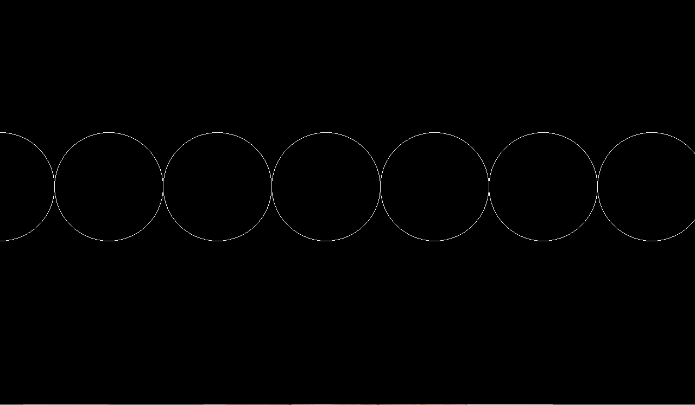
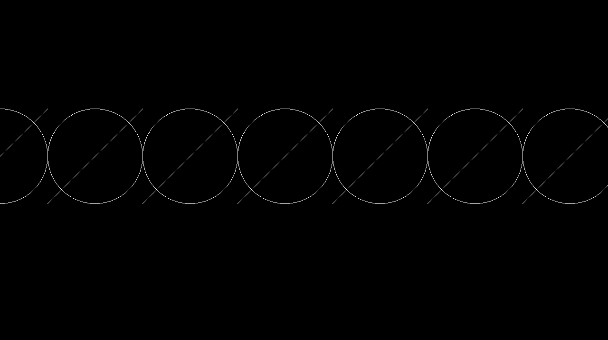
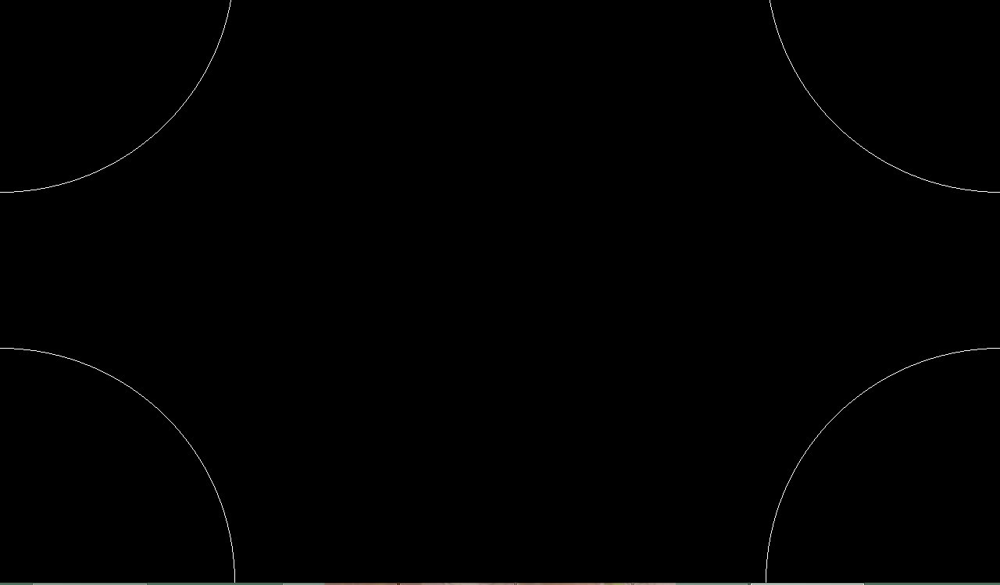
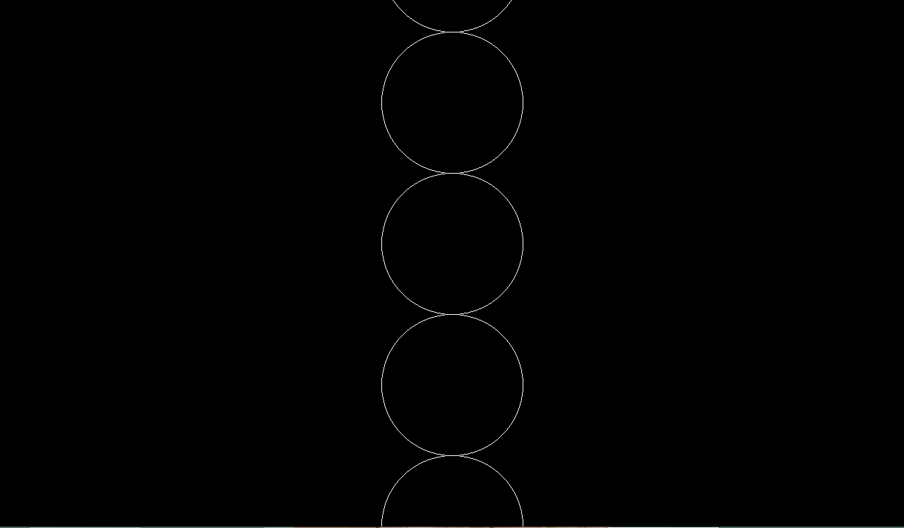
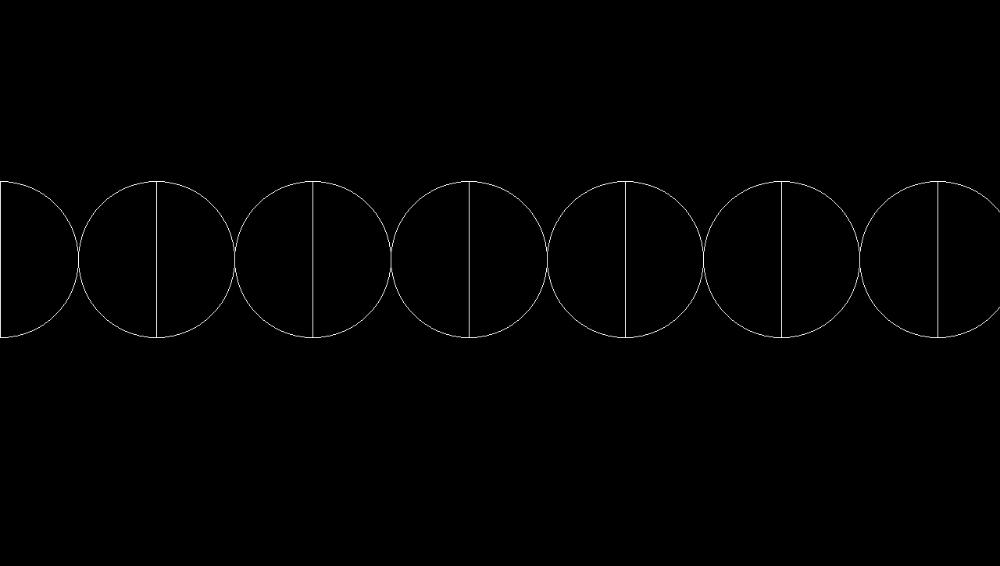
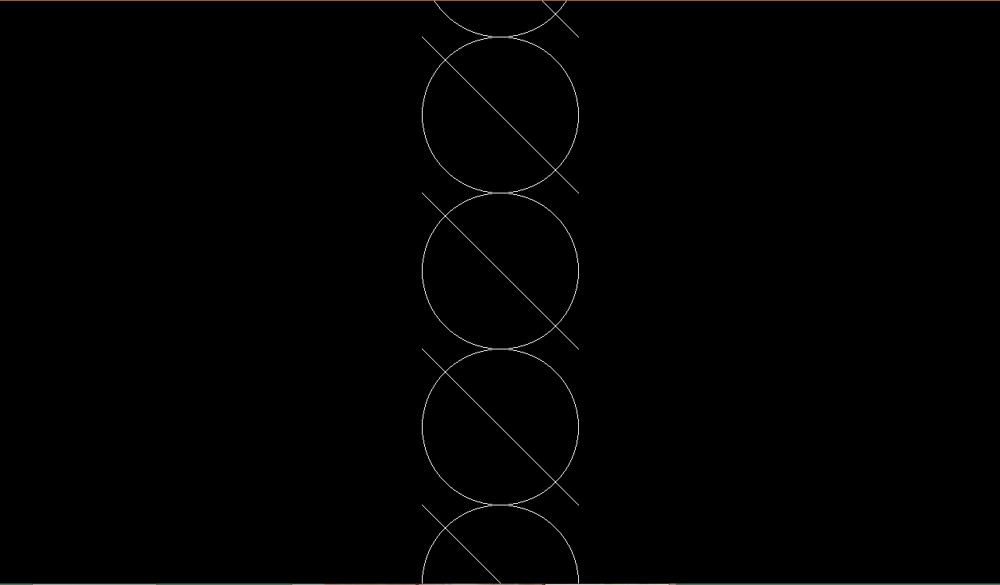
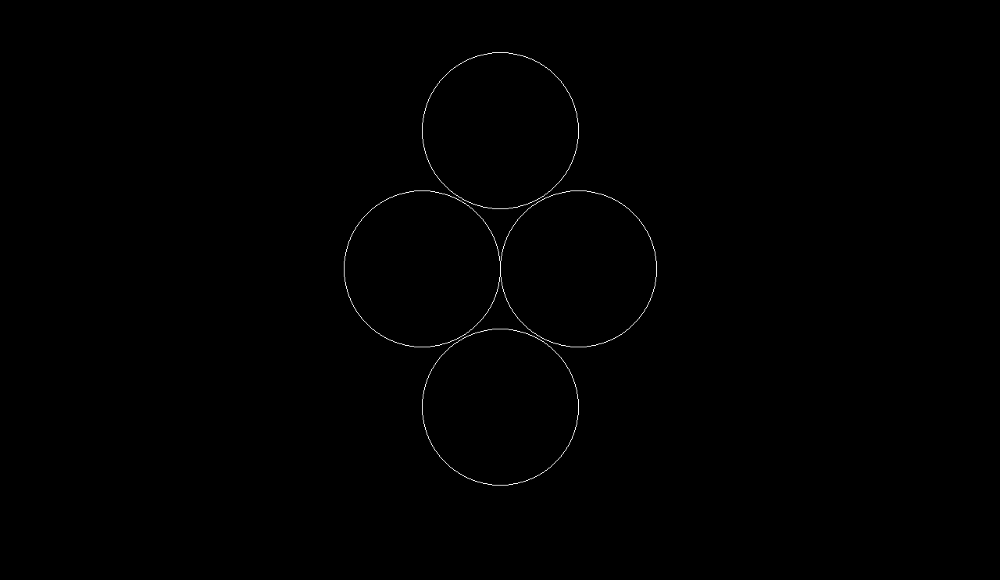
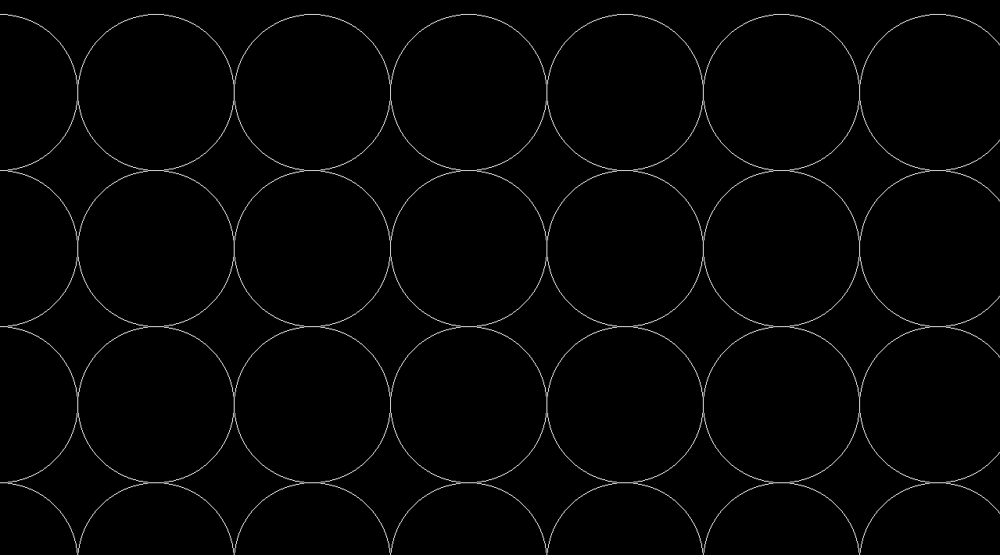

Выполните задание при помощи цикла for или while. Используйте следующие команды:
line(x1, y1, x2, y2) - линия от точки с координатами (x1; y1) до точки с координатами (x2; y2)
circle (x, y, r) - окружность с центром в точке с координатами (x; y) и радиусом r
paint() - отрисовать результат
--------------I вариант------------------
------------------№1-------------------

------------------№2-------------------
------------------№3-------------------

------------------№4-------------------

--------------II вариант------------------
------------------№1-------------------

------------------№2-------------------

------------------№3-------------------

------------------№4-------------------

--------------Дополнительное задание обоих вариантов------------------

-------------------------------------